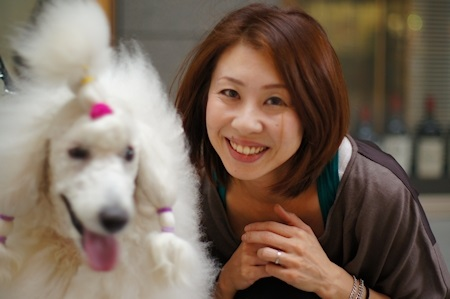
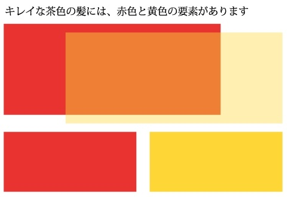
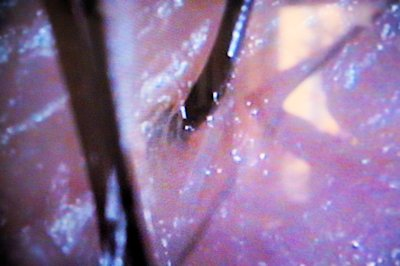

美容師として、良いヘナは自信を持ってお客様にお伝えできます
ヘナケア普及に取り組む青森県弘前市の美容師・佐々木麻衣さんに、美容師ならではの視点を語っていただきました。
佐々木麻衣さん 美容院というサービス業の業態の中でお客さんに対してヘナケアをしています。ヘナはお湯で溶くので「あたたかくて気持ち良い」と言われます。この感覚は大切ですね。頭に乗せるものが冷たいと、どうしても底冷えしてしまう。感性の問題としては、この温かさが、第一ですね。
―― 温かいことによるリラックス効果はありますか？
佐々木さん あります。頭の上は、体感温度を上げたり下げたりするのに重要な場所です。たとえば真夏に、頭に冷たい水をかけると体がすぐに冷えます。冬の寒い時期に頭の上に温かいものを置くと、体が温まるんです。
白髪との付き合い方
―― 佐々木さんの美容室のお客さんで、毛染めをする人はどれくらいおられますか？
佐々木さん 私のお店に来られる方は年齢層が高いので、お客さんの8〜9割は、毛染めをされていますね。
―― 毛染めをされるお客さんの年齢は。
佐々木さん 早い人で40代くらいからでしょうか。平均40代中頃から毛染めをされますね。私の場合、ヘナの目的として第一にケア。毛染めは二の次と考えて施術しています。でもたとえば特別養護老人ホームに勤務されているお客様がおられます。この方の場合は、施設利用者・入所者のおじいちゃん、おばあちゃんから、白髪を指摘されてしまうんだそうです。男性からの指摘が多く、どうも、おじいちゃんたちの意識には「女性はきれいじゃなきゃいけない」という思いがあって、それが言葉になっているようです。今の高齢者は、現代人としての感性をお持ちの方ばかりですから、たとえばパーマをあててみたら「その髪型は似合わない」とか、ものすごく敏感に反応するのだそうです。女性に対してこうあってほしいというイメージがしっかりしている。そういう事情をお持ちでした。
―― 週に１回染めるということは、頭髪全体を染める必要はないですよね？
佐々木さん 私の美容室では部分染めが中心です。伸びてきて白髪が見えている根元部分にしかしない。なぜかというと、これは色の問題に関わってきて難しくなるからです。修復の話は別にして色だけで考えた場合、たとえば、ケミカルで毛染めをして、ある程度の明るさを残したいと思っている方に対して頭全体にヘナケアをしてしまうと、色が暗くなってしまいます。
自分で好きな髪の毛の色を作るアイディア
―― 佐々木さん自身の髪の毛は、少し色が入っていますが、これはどんな方法で染めているのですか。
佐々木さん 私自身はまず、明らかにしておきたいことがあります。それは残念なことに私自身には白髪がないということです。ヘナは白髪に色が付くのですが、黒髪に対しては「黒色を茶色に変えてしまう」という働きはしない。そして、私は髪の毛を明るくしたいという思いを持っている…。このような要素が絡まり合っているのが私の現状です。黒髪はヘナでは明るくできないので化学染めをしています。でもその前に処理があります。前日にヘナ100％の『サフランオレンジ』でヘナケアをするんですよ。
―― 手順を詳しく教えてください。
佐々木さん ヘナ → 化学染め → ヘナケア。私はこのようにして前処理と修復で毛染めをしています。
―― ご自身が使うのはヘナ100％の『サフランオレンジ』だけですか？
佐々木さん そうです。しかし、ここにちょっとこだわりがあって、私はターメリックを添加します。
―― スパイスのターメリック？
佐々木さん そうです。今の私の髪の色は、ヘナ100％のオレンジとターメリックで作っています。自分が気に入る色を、自分で作っています。仕事柄、お客様から見られているイメージの問題があります。私は最初、オレンジだけでヘアケアをしていました。そうするとお客さんからイメージが暗くなった、落ち着く分、雰囲気が暗く見える。明るさがないと言われてしまったんです。
ヘナケアと化学染めの組み合わせという選択肢も、事実としてあります
佐々木さん 自分の好みの色を大切にして白髪染めに明るさを求めるお客さんには、化学染めとヘナケアを組み合わせることを必ず伝えています。明るい髪の毛の色を構成する要素として茶色があり、茶色は分解すると黄色と赤色になります。黄色と赤色を比べると、赤はどうしても落ち着きを表現する色になります。私という人物の個性をどう表現するかということを考えた場合には、黄色を増やす必要がありました。
―― 1番に黒髪に対しヘナ100％のサフランオレンジでヘナケアをして、次に化学染めで黒髪を明るくし、再度修復にヘナとターメリックのヘナケアによって、この狙った通りの色を作っているということですか？
佐々木さん そうです。それでこの髪の色が生まれます。私は化学染めをするときに注意を払っています。一般的に毛染めは地肌にべったり塗るでしょう。特に、白髪染めの場合はその傾向が強くなります。でも、私はべったりと塗ることはしません。ヘナは地肌に直接塗りしますが、化学染めではそのようなことはしません。髪の根元を浮かしてぎりぎりの線で塗る。お客さんに対してはいつもこのルールを守っています。地肌につけた瞬間に、化学物質のけい皮吸収の問題が発生しますから、これを多少でも防ぎたい。私が美容師になる時の研修でも地肌にべったりとつけることは教えられていないのです。
―― 0.1ミリでも根元に白色が残っていたら、お客さんの心理としては「損した気分」になりはしないだろうか。そういうことは考えますか。
佐々木さん そうならないようにするのが技術、感性、配慮ではないでしょうか？お客様には必ず、ご自身で気にされているラインがあります。その気になる部分はカバーする。鏡を見て、見える部分はしっかりとおさえるという考え方です。接客の大事な部分は技術を使い感性を活かし、お客様に対して配慮する。そんなところにあるのではないでしょうか。
―― そういう配慮をすると、ヒリヒリ感は改善されるのですか？
佐々木さん されます。
―― 「じゃあ、化学染めでいいや」という声も上がりそうです。美容師さんの技術で化学物質の問題が改善されるなら、あえて良いヘナにこだわる必要がないのでは？という意地の悪い見方もできますが、ご自身はこれについてどう思われますか？
佐々木さん ですから、事前の処理と事後の処理があるというのが大切です。
ヘナケアで健康なおしゃれの選択肢が広がる
佐々木さん 私の母も美容師で、以前からヘナを扱っていました。私は色の世界から髪の毛に関心を持つようになったのですが、ヘナに出合った最初の1年間、実はヘナを否定し続けていたのです。なぜかというと、自分には白髪がなくて、ヘナは黒髪に対しては色をのせていくことができない。だから母親に対してヘナは有用ではないと言い続けてきました。しかし、この価値観が劇的に変わりました。美容院のお客様ですごく髪の毛が細くなってしまっている方がおられました。この方が1年間、質の良いヘナでケアし続けた結果、丈夫な髪の毛になって、しかも新しく元気な髪の毛も見られるようになってきた。このあり得ない結果を自分の仕事場で見てしまったので、もう何も言えなくなった。じゃあ、どうするか。と考えたのです。
―― 今の佐々木さんの髪の色はイメージカラーとしてずっと決めているものですか？
佐々木さん そうです。色はたくさん試しました。人形の髪といえば分かりますか、化学物質を使いすぎてゴムのような髪になってしまったこともあります。
―― そのダメージというのは感じますか？
佐々木さん 化学染めのダメージは感じますよ。ヘナだけを使っていた時期もあるので、その時の髪と比べるとまったく違います。私は今、前処理・後処理を含めて化学染めとヘナケアを併用しています。この方法でも厳密にいえば、ヘナだけのヘナケアによる髪質とは違った感触になっています。 でもどうしても色の問題が関わってくると、やむを得ない。色を気にしている方は健康も当然気にしているけれど、見栄えも気にしている。だからその点で、「事後にヘナケアをするとダメージが軽減されますよ」という提案ができるのです。
―― 前処理すると色は変わるのですか？
佐々木さん 変わります。本当は、前処理すると化学染料が入りにくくなります。化学染めの時間が長くなります。けれども、私の場合は、化学染めをする段階でのリスクから頭皮を守るという意味で前処理を大切に考えています。
―― その方法はコストがかかる方法でもありますね。お客さんでその方式を採用している人はおられますか？
佐々木さん おられます。やはり、ご自身では体が弱い、疲れやすいとか、ご自身の身体に気を使っておられる人。女性であればいつまでもキレイでいたいという願いを持っておられる方、そういう方々は前処理・後処理にも、十分に気を使っておられます。健康志向の方は知っておいて損はない方法でしょう。
ヘナケアと美容業界の関係
―― 美容業界では長年にわたって、ヘナに対して距離をとる方が多かったと聞いています。
佐々木さん はい。以前は私がそうでしたから。ひとつは業界として、ヘナについての正しい知識が十分に伝達されていないという事実があります。体に気を使いながら美しさを実現しようとされているお客様のほうが、ヘナのことをよく知っておられるケースも珍しくはありません。 そしてもうひとつ、経営となると、ヘナは使いにくい面があります。
―― それはどういうことですか？
佐々木さん 経営を第１に考えると、１人のお客様に接する時間が多少なりとも長くなる傾向にあります。第２に、ピンポイントで想定した色にはならないということがあります。ヘナは自然のものですから、その人の体温・ストレスの状態で色が微妙に変化します。抗がん剤などの強い薬を服用されていると、独特な色になる方もおられます。第３に、ハイグレードなヘナを使っている人ほどパーマがかかりにくくなる。…とまあこういう理由で、美容室という業種に当てはめたときに、「客単価・客数の減少」という計算が見えてきます。
―― もちろんお仕事ですから、効率は大切。でも、ヘナを導入される美容師さんもおられますよね。
佐々木さん 根本の問題として、美容師はお客様の髪の毛を痛めるのが仕事ではないんですよ。そうでしょう？美容師は、お客様と一緒に、その人らしい健康的な美しさを実現していくパートナーですよ。それが美容師だと名乗ることを認めてもらえ、そしてこの先も、自分の知識と技術が求められる根拠になります。
でもなぜ、中高年齢の女性のお客様の髪の毛が薄くなっているのに、知らん顔をするの？
そもそも自分がしていることって、どれくらい、お客様のしあわせに貢献できているの？
これからは創る、整える、だけではなくて1人1人に対してどう表現するか？どうアピールするか？
少なくとも、私は自分の仕事に対してそんなふうに思います。だから、ヘナを扱う美容師さんが増えているのは、おそらく皆さん、そんなお気持ちなのではないでしょうか。
今は技術を持つ人よりも持たない人の方が、知識、感性を高めておられることが多いですよね。その中でどのように技術、感性を発揮するかが問われているのではないでしょうか。
髪の毛の色をより丁寧に見る
佐々木さん 色の表現ですが、例えば、黄色と赤色を比較すると、黄色の方が明るく見え、赤色は黄色より落ち着いて見えます。もちろん個性もありますから、雰囲気も含めて考えています。
―― では、「髪を明るくしたい」というお客さんにそのことを説明されますか？
佐々木さん そうですね。お客様のご要望を第１として考えますが、雰囲気など自分のイメージがわからないお客様にはアドバイスが必要です。現代の化学染めは進化していますので、思った通りの色を出せます。その染料を髪に乗せているだけで、その通りの色になるので、美容師という仕事でいえばとても使いやすい。その点、ヘナは黒髪には染まらないので美容師にとっては使いにくい。だから健康志向、お客様のケアを考えておられるオーナーさんでなければ採用しにくい面もあるのではないでしょうか。
ヘナケア後の髪の毛の手入れについて
―― ヘナケアをした後は、数日間、シャンプーをするたびに色が落ちることもありますが、どうでしょう？
佐々木さん そうですね。染色した色は、その色の性質によって異なる変化がおきます。暖色系のオレンジは髪の毛のたんぱく質と結びついていきます。これは、ダメージヘアの修復と等しいのですが、結合しなかった余分な色素は落ちていきます。シャンプーのたびに落ちていくのは、この余分な結合しなかったものです。
これとは違う変化をするのが、ナンバンアイ（インディゴ）が配合されている『ソジャット ヘナ コーヒーブラウン』などです。コーヒーブラウンの色は、『サフランオレンジ』の色素であるローソンに付随して髪の毛に付着します。オレンジのみの時と違って白髪などまで見えてしまうほど色落ちをする場合があります。ですから、ナンバナイ（インディゴ）などの寒色系の色素は特に、髪にのせて置く時間を長くする必要があります。
―― 美容師のお仕事でヘナを使用していて、悩みを持つことなどありますか？
佐々木さん そうですね。ヘナをご存じの方はかなりおられます。でも、良いと分かっていても「時間がかかるから面倒」「色落ちする」「キレイにできない」などのお声を聞くことがあります。自然のモノですから、だからこそ、体温、室温、湿度などすべての要素が関係します。ですから、私は時間をかけずに色落ちもせず、安全なモノはないのかと考えました。
―― その結果は？
佐々木さん ヘナを物理的観点から見ると、体温や室温がやや高いと分子運動が激しく、寒色系の色が入りやすい。逆に、体温や室温が低いと暖色系の色が入りやすい。
そして、食品でも酸性食品、アルカリ性食品とあるように、ヘナ製品もpHが違って酸性、アルカリ性があります。
ヘナ100%のオレンジは酸性。
ナンバンアイ（インディゴ）は、アルカリ性。
例えば、頻繁にインディゴだけでケアされている方は、頭皮が乾燥しやすくなります。なぜでしょう？
健康な頭皮は弱酸性。インディゴはアルカリ性です。
弱酸性の肌を頻繁にアルカリ性の石鹸で洗って脂質を取りすぎてしまった経験がある方もおられるでしょう。頭皮でも同じことがおきます。
そして、人はもともと、年齢を重ねるほどに頭皮中の脂質が少なくなります。
つまり、頭皮中の脂質のバランスをどうとるかということがテーマとしてあって、その扱いによっては、かゆみに繋がる原因を作ってしまうことがあります。ですからインディゴを配合したヘナ製品をよく使われる方は、頭皮の乾燥に注意することも大事ですね。
私の場合は、頭皮、髪の毛、ヘナ、インディゴ、と性質の異なるものを統合すれば問題がなくなるのではないかと考え、トリートメントのための水を研究しています。
ヘナケアをする時の心地よさには理由があります
佐々木さん 大きくとらえれば、まだまだ美容業界ではヘナを毛染め資材としてしか見ていない。この認識をくつがえすのが、私のしたいことです。質の良いヘナを使っている女性は、なぜ、ヘナケアの時に、リラックスし、安心し、穏やかで美しい表情になるのか。相手のことをちゃんと見る人なら、ぜったいこれに気付きます。ケミカル染料で毛染めをしている時ではまず出会えない表情をされるのですから。数千年にわたってヘナは、単なる染料ではなく、恩恵をもたらすハーブとして扱われてきました。その歴史の知恵を、現代社会に生かしたいですね。そして、お客様にとっての美しさとしあわせを実現していくお手伝いをするという、美容の専門家本来の仕事を育てていきたいですね。
Fin. |